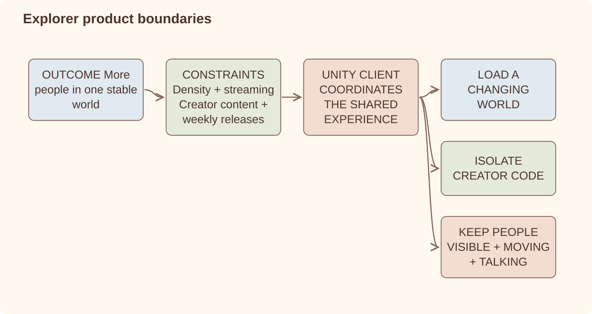
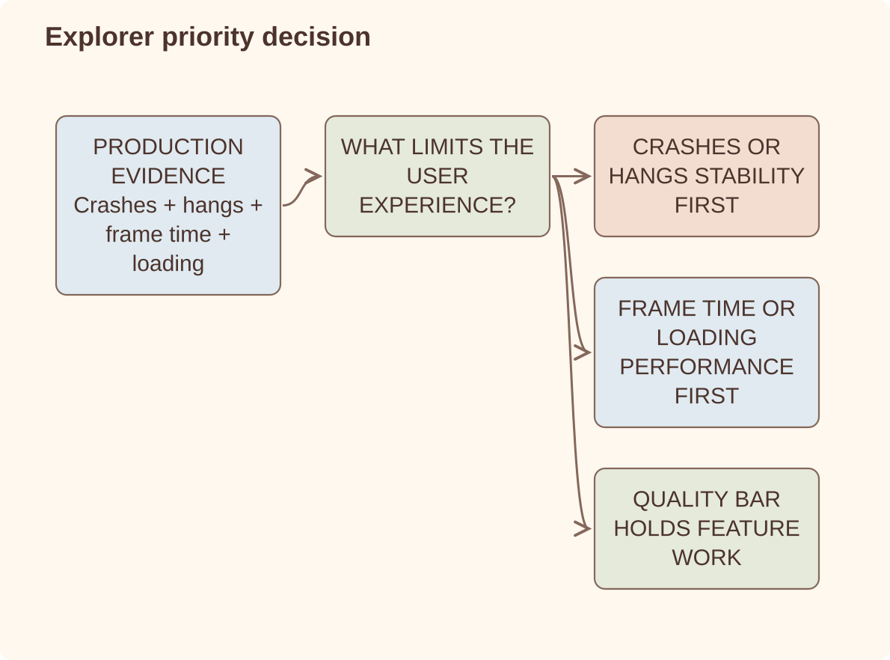
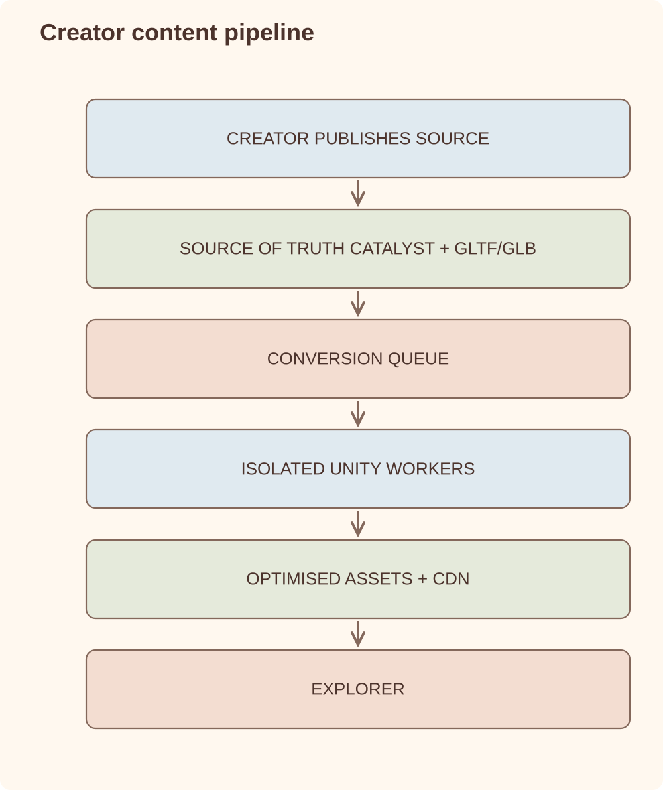

Case study
Unity Explorer
I worked on Decentraland's original web client before leading the ground-up rebuild and production release of its Unity/C# PC client, while the existing product continued to ship.
Unity / C# / Arch ECS / V8 / CRDT / LiveKit / SQS / headless Unity workers / asset bundles / Catalyst / Sentry
Context
Decentraland needed more people and avatars in the same place, long sightlines, reliable real-time presence, creator content and weekly delivery. The old web client had carried years of technical debt. It could still be patched, but every patch made something else more fragile: more special cases, weaker ownership, slower development and less confidence in releases.
We decided to rebuild after upkeep stopped being a realistic option. Unity was already part of the legacy path; the important change was the client architecture and what it allowed the product to do.
What changed
- Replaced an architecture that could not sustainably support the open-world direction with a modular Unity client designed around streaming, observability, creator content and release confidence.
- Moved high-density social experiences toward Pulse's server-authoritative multiplayer model, targeting reliable shared state at approximately 100-user density.
- Worked directly on the distributed asset-bundle converter: SQS-queued processing and headless Unity workers turn creator GLTF/GLB assets into optimized client content.
- Moved performance work toward a stable 60 FPS with approximately 100 concurrent users while reducing CPU, memory and GPU memory pressure.
- Connected telemetry to prioritization: crashes, hangs, frame time, loading and release regressions became inputs to technical direction.
- Improved release discipline to support approximately 75 public builds per year, including a recent 52-day period without a hotfix.
Architecture
The product direction determines which technical boundaries matter.

Production evidence shows which problem comes first.

Three decisions define the client. Game state lives in a data-oriented ECS because frame-time spikes are user-facing product problems. Creator scenes run in isolated V8 runtimes and communicate through CRDT, which helps reconcile scene and engine state but does not solve multiplayer authority by itself. Real-time multiplayer still needs an explicit authority boundary; peer-to-peer did not scale as more players shared the same space, so reliable voice, avatar sync and coordination moved toward server-backed infrastructure.
Creator content pipeline
I worked directly on the asset-bundle converter that connects Decentraland's creator tools to the production client. Creators build scenes with the TypeScript SDK and publish their original GLTF/GLB assets to Catalyst. Catalyst remains the content-addressed source of truth; optimization is a derived, replaceable distribution step rather than a mutation of the creator's source content.
Creator source stays intact while a replaceable pipeline optimizes delivery.

The dependency graph matters because changes cross several ownership boundaries: SDK contracts shape creator output, Catalyst owns canonical content and manifests, the converter produces platform-specific derivatives, and Explorer consumes both the source metadata and optimized bundles. SQS decouples deployment from conversion, absorbs changes in demand and lets conversion capacity scale horizontally without blocking creators.
The outcome is faster runtime loading and distribution of optimized content while preserving portable GLTF/GLB assets as the canonical source. If the optimization strategy changes, bundles can be regenerated from Catalyst instead of asking creators to republish their scenes.
Interesting problems
- How does one bad scene not take down the client? Scenes are isolated per V8 engine with explicit error budgets — a scene that throws too many errors per minute is suspended, not the client. User-generated content means the client must assume hostile input as the normal case.
- How do you convert an open-ended stream of creator content? The asset-bundle converter separates orchestration from conversion: SQS buffers asynchronous jobs while headless Unity workers transform GLTF/GLB assets into client-ready bundles. That boundary allows worker capacity to scale independently from content ingestion.
- How do you keep a frame budget with unbounded content? No allocation in hot paths, aggressive pooling, LOD and prioritization of avatars by relevance — the work is bounded even when the world is not.
- How do you rebuild without stopping delivery? Split the work into shippable verticals and keep release quality visible. The legacy client kept serving users while the new one earned its place.
- How do you make performance work measurable? Tie technical debt to product KPIs — loading time, frame rate, crash rate — and let telemetry, not opinion, order the backlog.
- Where does authority live in real-time multiplayer? CRDTs are useful for state reconciliation, but they do not remove the need to decide who owns the truth. Peer-to-peer looked attractive, but it became error-prone as more players joined the same space; connections failed and state resolution became too fragile. The practical answer was to keep the protocol open while using server-backed multiplayer where reliability required it.
Lessons learned
- The rebuild became real when the new client could ship every week, not when the architecture looked complete.
- CRDTs helped reconcile state but did not answer who held authority in multiplayer.
- Peer-to-peer became too fragile as more players shared the same space.
- Crash, loading and frame-time data gave us a better backlog than opinion alone.
- For a social product, unreliable presence is a product failure.